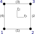

Grid
In Ferrite a Grid is a collection of Nodes and Cells and is parameterized in its physical dimensionality and cell type. Nodes are points in the physical space and can be initialized by a N-Tuple, where N corresponds to the dimensions.
n1 = Node((0.0, 0.0))Cells are defined based on the Node IDs. Hence, they collect IDs in a N-Tuple. Consider the following 2D mesh:
The cells of the grid can be described in the following way
julia> elements = [
(1,2,5,4),
(2,3,6,5),
(4,5,8,7),
(5,6,9,8)
]Additionally, the data structure Grid can hold node-, face- and cellsets. All of these three sets are defined by a dictionary that maps a string key to a Set. For the special case of node- and cellsets the dictionary's value is of type Set{Int}, i.e. a keyword is mapped to a node or cell ID, respectively.
Facesets are a more elaborate construction. They map a String key to a Set{Int, Int} consisting of (global_cell_id, local_face_id). In order to understand the local_face_id properly, one has to consider the reference space of the element, which typically is spanned by a product of the interval $[-1, 1]$ and in this particular example $[-1, 1] \times [-1, 1]$. In this space a local numbering of nodes and faces exists, i.e.

The example shows a local face ID ordering, defined as:
faces(::Lagrange{2,RefCube,1}) = ((1,2), (2,3), (3,4), (4,1))Other face ID definitions can be found in the src files in the corresponding faces dispatch.
The highlighted face, i.e. the two lines from node ID 3 to 6 and from 6 to 9, on the right hand side of our test mesh can now be described as
julia> edges = [
(3,6),
(6,9)
]The local ID can be constructed based on elements, corresponding edges and chosen interpolation, since the face ordering is interpolation dependent.
julia> function compute_faceset(elements, edges, ip::Interpolation{dim}) where {dim}
local_faces = Ferrite.faces(ip)
nodes_per_face = length(local_faces[1])
d = Dict{NTuple{nodes_per_face, Int}, Tuple{Int, Int}}()
for (e, element) in enumerate(elements) # e is global element number
for (f, face) in enumerate(local_faces) # f is local face number
# store the global nodes for the particular element, local face combination
d[ntuple(i-> element[face[i]], nodes_per_face)] = (e, f)
end
end
faces = Set{Tuple{Int, Int}}()
for edge in edges
# lookup the element, local face combination for this edge
push!(faces, d[edge])
end
return faces
end
julia> interpolation = Lagrange{2, RefTetrahedron, 1}()
julia> compute_faceset(elements, edges, interpolation)
Set{Tuple{Int64,Int64}} with 2 elements:
(2, 2)
(4, 2)